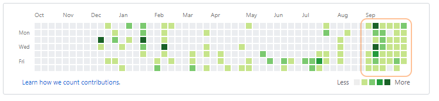

Der Alpha-Release von meinem Game:

Shoot 'em up game
was best to stick all the defensive measures on the BACK of your rocket.
Soooo... you're the pilot, tasked to lead this mission: Navigate and align your rocket ship JUUUST right and explode-fart their faces with all the means you got on board - space flight with style!


Play now
The latest release is available hereDownload
| Version 1.0.0-alpha | Download link |
|---|---|
| Windows (32-bit) | Download |
| Mac (64-bit) | Download |
| Linux (32-bit) | Download |

Developer notes
Features:- Kontrollierbares Raumschiff
- Ansatz für erste Gegner
- Turbo Modus (mit hoher Schubfrequenz erhöht sich Beschleunigung exponentiell)
- Menu
- Splash
5,5 Wochen Entwicklungszeit
Angefangen mit 0 Ahnung von Phaser und 0,1 Ahnung von Javascript
Hauptsächliche Schwierigkeit war das aufstellen der Entwicklungsumgebung. Ich habe mich für Visual Studio Code entschieden.
Da aber Games in Phaser eine Serverumgebung zum Laufen benötigen, musste ich erst einen minimalen Server in Node.js schreiben.
Weil Node.js noch in Javascript geschrieben ist und die Integration mit Visual Studio Code sehr ausgebaut ist, lässt sich der Server zusammen mit dem Spiel ganz leicht beim Debuggen ausführen und später um Multiplayer-Elemente mit Sockets.io erweitern.
Was ich dann mit wachsendem Quelltext feststellen musste, ist dass langsam die Sache - in einer einzigen Datei zusammengequetscht - unübersichtlich wurde.
Also brauchte ich etwas um das ganze auf mehrere Datein zu verteilen und zu Modularisieren.
"Hey, es gibt in JS6 jetzt auch import", durfte ich ein paar Tage später feststellen. Naja, zu spät.
Und zum Schluss kann mit Phaser einem Framework in Javascript der Quelltext für das eigentliche Spiel geschrieben werden.
Alle umständliche low-level Arbeit die mit WebGL/Canvas werden wegabstrahiert.
Was übrig bleibt ist alles was es eigentlich braucht. Texturen/Sprites, Physik und Kollisionssystem, Sound/Musikverarbeitung, Schnittstelle für Steuerung usw.
Komplikationen
- Schwierigstes Problem bleibt es die Parameter so zu wählen, dass es eine balancierte Steuerung hat aber das Feeling und den Flow nicht beeinträchtigen.
Heißt z.B. das Schiff soll schnell genug sein damit es zur Atmosphäre und Stimmung passt, aber der Spieler soll trotzdem früh genug auf Gefahren reagieren können.
Das Schiff soll wendig sein und man sollte schnell lenken können. Trotzdem soll die Präzision behalten werden um genaustens auf Gegner zielen zu können - Trigonometrie. Die ganze Zeit.
Das ist auch eigentlich überhaupt kein Problem in zweidimensionalen Raum. Problem ist nur in Phaser werden (verständlicherweise) Rotationen bei Physik und Graphiken getrennt betrachtet. Jedoch sind bei mir immer Abweichungen von π oder π/2 welches den Code sehr unansehlich aufbläht. - Ich habe schon eine Grenze der Phaser API gefunden: Der Sound lässt sich zwar abspielen, einblenden, ausblenden, verstärken, zeitlich manipulieren undsoweiter. Aber der Pitch oder auch die Schnelligkeit lässt sich nicht manipulieren. Muss wohl noch eine weitere library herhalten müssen, nur für etwas pitch shifting.
- Letzendlich ist das Schwierigste, dass ich nur mit Objektorientierter Programmierung vertraut bin. Während Javascript mit JS6 den syntaktischen Zucker anbietet Klassen zu machen, versuche ich es trotzdem erstmal mittels Modulen, Prototypisierungen und Konstruktoren. Aber erst gestern musste ich einsehen, dass langsam der Code Spaghetti wird. Zeit für mehr refactoring...